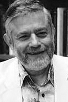

|  |
1995 год Manuel Blum (1938) «В дань его работам по основаниям теории сложности вычислений и её применению к криптографии и верификации программ» |
Страна: США
Образование: Доктор философии в области математики, MIT, 1964
О лауреате
В своей докторской диссертации в MIT Manuel Blum разработал машинно-независимую теорию сложности, которая лежит в основе всех возможных исследований сложности. Он предположил, что ресурс - это любая функция, которая имеет два основных свойства (Blum complexity axioms), заявив, что сумма ресурса, затраченного программой, запущенной на конкретном входе, может быть вычислена – однако, если вычисление остановится, то в этом случае она не будет определена. Эти аксиомы привели к богатой теории, полной неожиданных результатов. Одним из них является Blum's speedup theorem, в которой указывается, что существует такая функция, что любой алгоритм для этой неё может экспоненциально ускоряться почти для всех входных данных. То есть любой алгоритм для этой функции может быть изменён, чтобы работать экспоненциально быстрее, но затем новый алгоритм может быть снова изменен и так далее. Позднее появилось новое применение для теории сложности: криптография с открытым ключом, которая обеспечивает безопасную связь посредством использования однонаправленных функций, которые легко вычислить, но трудно обратить. Но, вероятно, самое известное применение теории сложности, с которым связан Blum, связано со случайностью. А именно, с генераторами псевдослучайных чисел. Его идея заключалась в том, что степень псевдослучайности числа кроется в вычислительной сложности. Отличие вывода хорошего генератора от случайной последовательности казалось тогда неразрешимой проблемой. В 1984 году Blum и его ученик S. Micali придумали генератор, основанный на задаче дискретного логарифмирования. А позднее, вместе с L. Blum и M. Shub, обнаружили ещё один генератор, использовавший повторное возведение в квадрат по модулю произведения двух больших простых чисел.
Ключевые слова: Blum complexity axioms, Blum's speedup theorem, Blum Blum Shub, Blum-Goldwasser cryptosystem
Краткая библиография
| 1. |
Blum, M., "A Machine-Independent Theory of the Complexity of Recursive Functions," Journal of the ACM, Vol. XIV, No. 2, Apri11967, pp. 322-336. |
| 2. |
Blum, M. and S. Micali, "How to Generate Cryptographically Strong Sequences of Pseudo Random Bits," SIAM Journal on Computing, Vol. 13, No.4, November 1984, pp. 850-864. |
| 3. |
Blum, M., L. Blum and M. Shub, "A Simple Unpredictable Pseudo-Random Number Generator," SIAM Journal on Computing, Vol. 15, No.2, May 1986, pp. 364-382 |